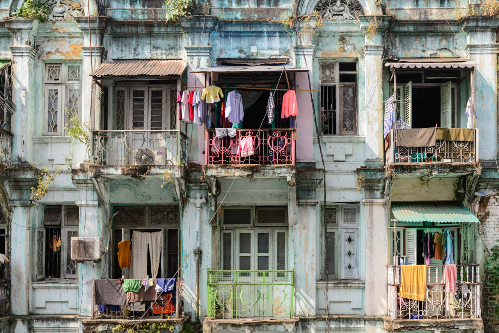
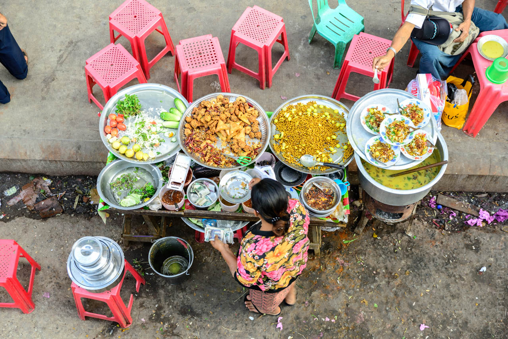
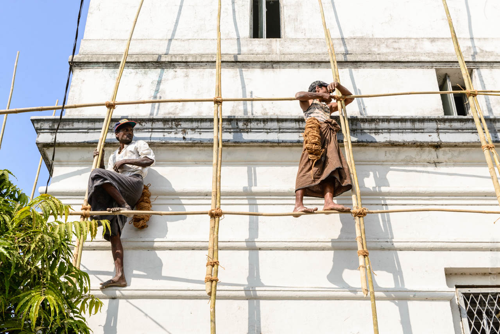
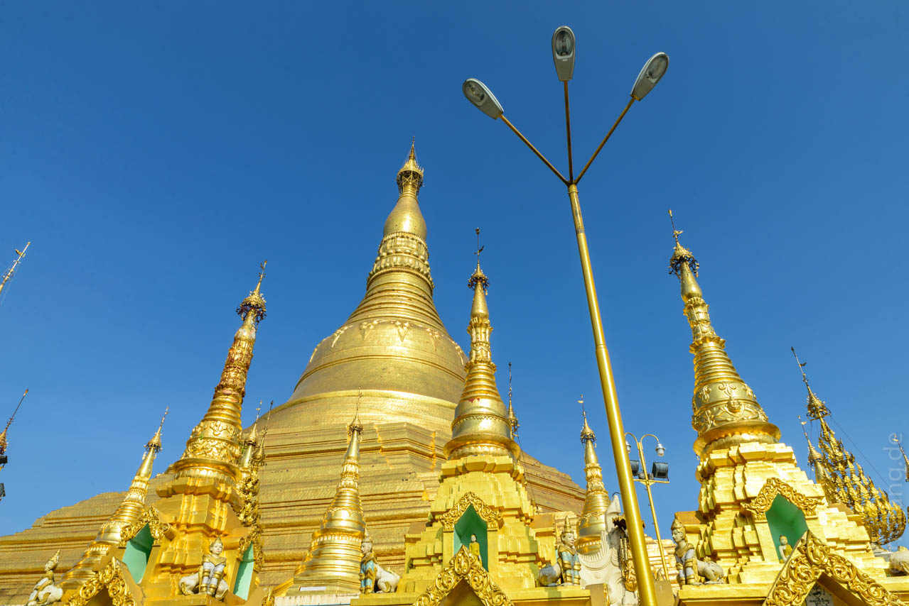
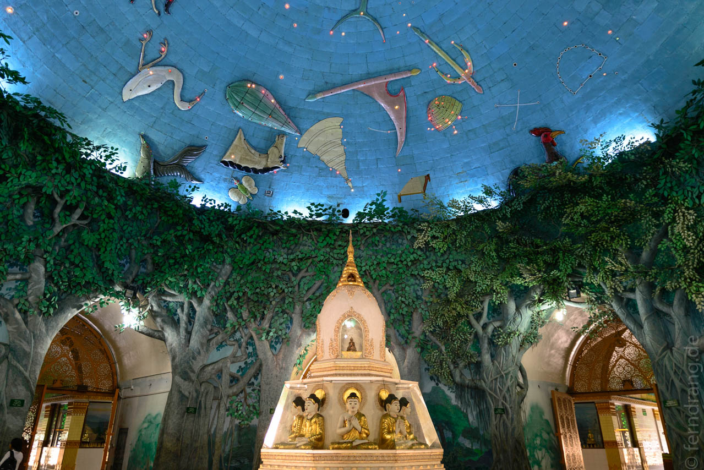

Der Bus nach Yangon war eher ein fahrendes Zimmer: Dielenboden und Plastikhocker für den Mittelgang. Die Sitzbänke waren aber leider keine Sofas. Unter Knarren und ächzen sind wir in der doppelten Zeit die Strecke wieder zurück gefahren.
Yangon ist eine sehr weitläufige Stadt. Das merkt man, wenn man vom Flughafen ins Zentrum fährt. Die Fahrt dauert fast 45 Minuten und führt die ganze Zeit durch locker geflochtenes Stadtgebiet. Es fällt auch auf den ersten Blick auf, dass es hier sehr viel sauberer und moderner zugeht als im Rest des Landes. In der Stadt sind Motorräder und Tuktuks verboten. Zusammen mit verhältnismäßig vielen Bäumen ist es hier praktisch smokfrei.
Die ausgedehnten Viertel nördlich des Zentrums sind schwer zu fassen. Es gibt Parks, Wohnhäuser, auch Geschäfte, kleine Slum-Placken, Bauruinen, Straßenstände - mal schicker, mal schäbiger. Aber nichts lässt sich zu einem zusammengehörigen Viertel zusammenfassen. Das macht die Erkundung der Stadt sehr punktuell und damit etwas schwierig.
Das alte Zentrum südlich des Bahnhofs ist ganz anders. Hier sind die Häuser in einem engen, regelmäßigen Schachbrettmuster gebaut. Die Blöcke sind sehr schmal und sehr lang. Unter den Häusern gibt es eine Menge Kolonialbauten, aber allesamt ruiniert. Die einst prächtigen Straßen sind extrem heruntergekommen und leider nicht in der charmanten Art Havannas vergammelt.
Das Leben spielt sich aber auch nicht in den Häusern, sondern auf der Straße ab. Das Zentrum ist praktisch eine kilometerlang fortlaufende Kette von Straßenständen. Hier kann man natürlich essen bis zum Umfallen, aber auch Kleidung, Schreibwaren, gebrauchte Lehrbücher, Autoteile und Werkzeuge sind im Angebot. Eine lokale Spezialität, die hier überall angeboten wird, ist eine Art Curry, in das geschnittene Samosas, Kichererbsen, geriebener Kohl, frische Minze und jede Menge Chilis gemengt wird – köstlich!
Ergänzt wird das durch einige große Markthallen. Der bekannte Aung Boyoke Markt ist eher auf Souvenirs spezialisiert, während die kleineren Märkte vor allem Stoffe handeln und derart wuselig und geschäftig sind, dass man sich wie auf dem Börsenparkett vorkommt.
Je weiter man nach Süden kommt, desto desolater wird der Zustand der Gebäude. Rund um das alte Hafenamt stehen eigentlich nur noch leere Ruinen. Von außen verkrusten Garküchen und Stände die Fassaden. Ausgenommen davon sind nur das Luxushotel Strand und einige Botschaften, die irgendwie gar nicht mehr hierher passen.
Unser Guesthouse Chan Myaye liegt mitten drin im Gewusel nahe der unattraktiven Sule-Pagode, die nur als Landmarke dient. Das Personal ist zwar sehr hilfreich, aber weniger der Sauberkeit verpflichtet. Die Zimmer haben nur Fenster auf den Flur und es ist extrem hellhörig und muffig.
Die offizielle Hauptattraktion Yangons ist die Shwedagon Pagode. Diese riesige Stupa will alle Rekorde brechen. Sie ist mit tonnenweise Gold überzogen und strahlt derart in der Sonne, dass man kaum hinsehen kann. Um die Plattform herum sind noch viele weitere Tempelchen errichtet, die allerlei Reliquien enthalten. Rund herum sind Ecken für die Wochentage ausgezeichnet, denn die Burmesen messen dem Wochentag ihrer Geburt ebenso viel Bedeutung bei wie Illustrierte dem Sternzeichen. Man kommt aus dem Beten nicht heraus.
 
Abends wandeln sich die Straßen. Wo gehandelt wurde, ist es plötzlich ganz verlassen. An anderen Orten wachsen die Plastikhocker wie Pilze aus dem Boden. Lange dauert es aber nicht, bis die Bürgersteige ganz hoch geklappt werden.
Silvester ist da nur bedingt eine Ausnahme. In einem Park wurde ein Volksfest mit großer Bühne und viel Musik veranstaltet. Hier war viel los und die Taxis haben sich an der Zufahrt verkeilt. Auch wenn kein Alkohol ausgeschenkt wurde, waren viele junge Leute auf elastischen Beinen unterwegs. Die Rooftopbar auf dem Alfa-Hotel mit tollem Blick auf die Shwedagon-Pagode war aber fast leer. Der Rundumblick hat gezeigt, dass Feuerwerk noch nicht so beliebt (oder bezahlbar) ist.
Am letzten Abend haben wir nur ein paar Meter neben unserem Guesthouse ein japanisches Restaurant entdeckt. Im ersten Stock war man in einer anderen Welt mit Tatami-Matten, heißem Sake und köstlichem Essen. Ein schöner Abschluss bevor wir am nächsten Morgen um 5:30 mit dem Taxi los müssen.